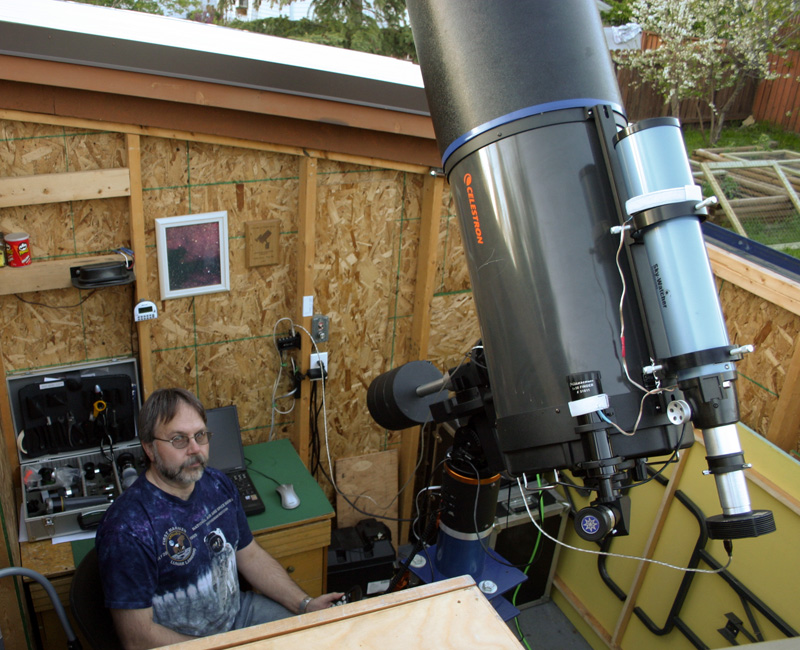
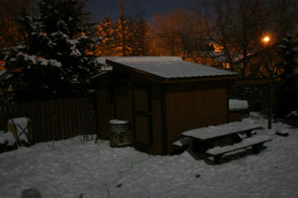
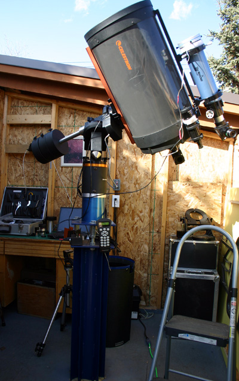

Click on Links to View Galleries
|
|
The original pictures featured on
this site were taken with a DSLR camera and a
variety of equipment as I try to develop my skills. TELESCOPES Celestron C1400 on CGE mount Skywatcher ED80 on AVX Mount Meade LX3 - 8" Schmidt Cassegrain Home made equatorial mount CAMERAS Canon T2i + T3i Modified Canon Digital Rebel Camera D300 ZWO ASI178MM Monochrome QHY5 - Autoguider Orion Starshoot DSC1 LENSES EF50mm F1.4 and 85mm F1.8 FILTERS Orion Skyglow Astronomik CLS - EOS Clip Daystar Quark - Chomosphere Orion and Baader Solar filters GUIDING Most of the older photos were actually manually guided but I have recently added autoguiding using PHD and a QHY monochrome camera. Thanks to a finderscope donation from Don Gulka at the 2010 SSSP. I built a 50mm finder-based autoguider that seems to be working very well. OBSERVATORY Custom designed roll-off roof observatory 8' x 12' located under moderately light polluted skies eeemale: hello(at)concretecellar(dot)ca encoded to fight robots! |
   |
|